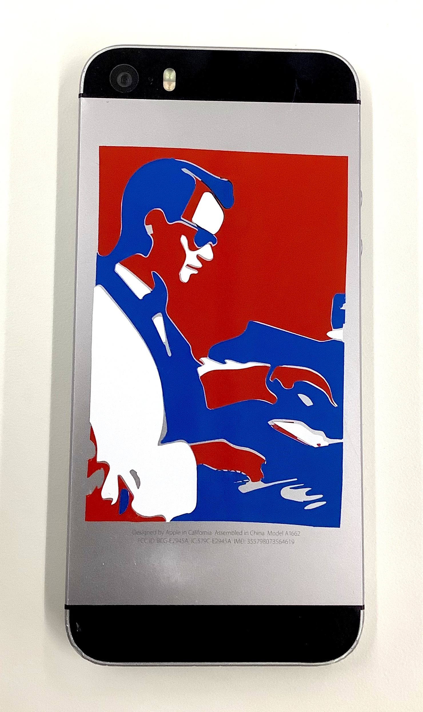
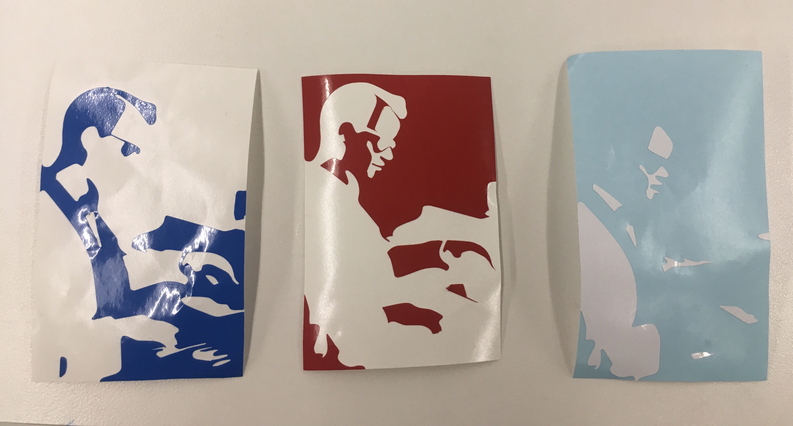
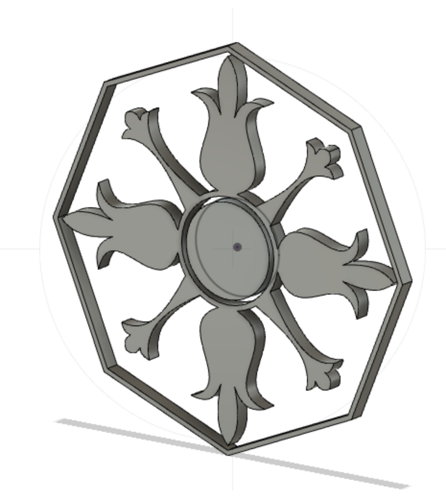
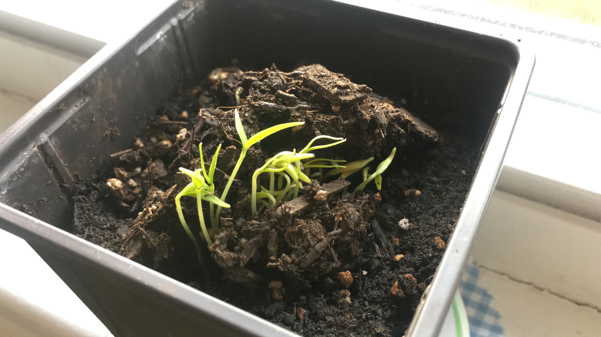

Vinyl sticker #1: a 3-color rendering of Ernesto Hill Olvera making the Hammond organ sing, like he did in Mexico City in the 1950's.

I had to isolate each of the three colors and make three separate PNG files to send to the vinyl cutter. You can see the three resulting layers before assembly here:

================
And a first attempt at designing in Fusion 360.

And update on plant:
